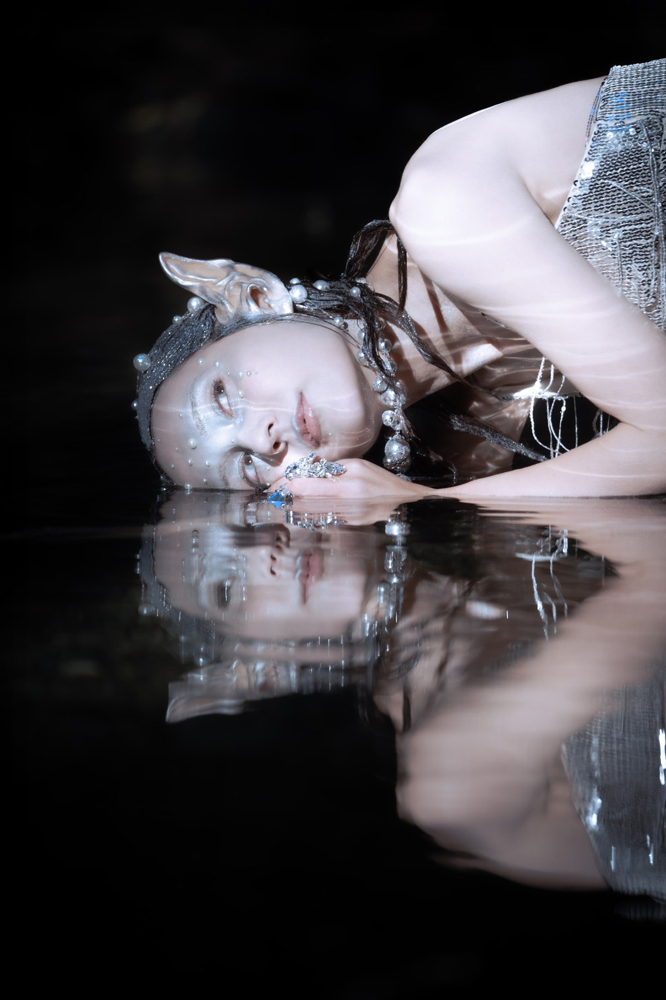
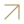
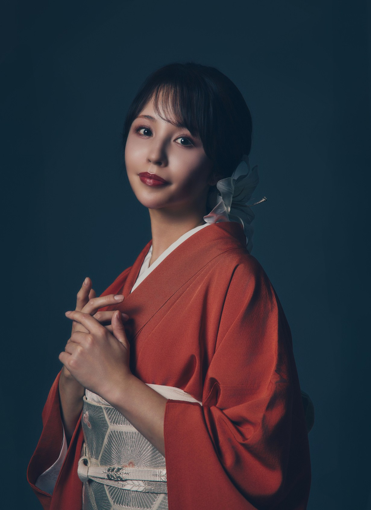
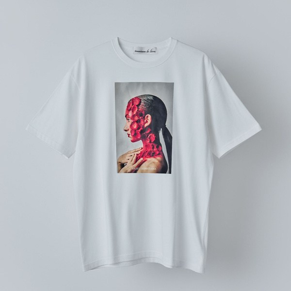
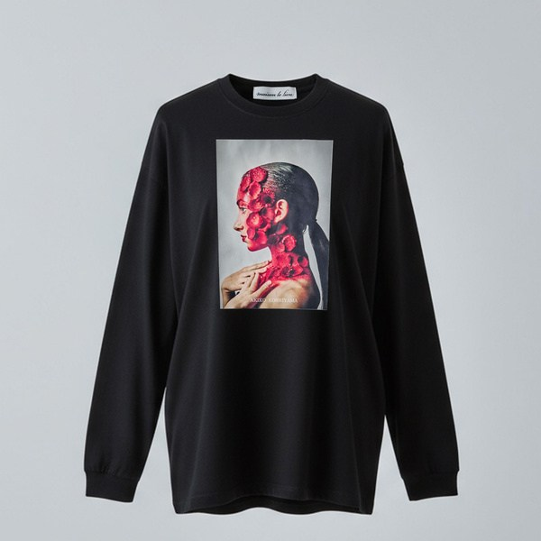
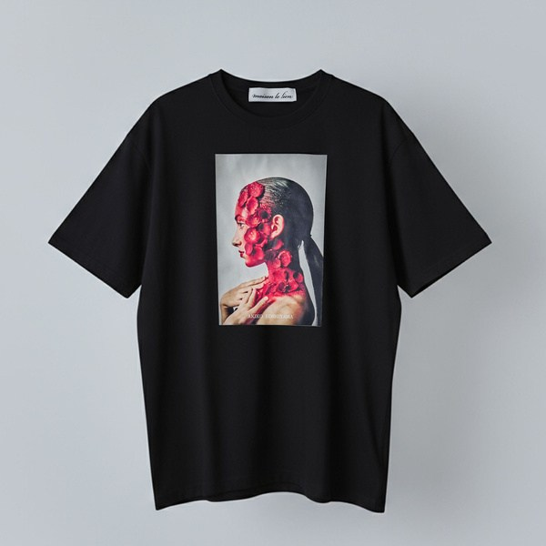

AKIKO KOSHIYAMA — SELECTED WORKS
見えないものに、
美を宿す。
THE UNIVERSE WITHIN
一瞬の美に、永遠の気配。
作品の世界へ01 — 04
肌は、内なる世界の風景になる。
ひとりの内側に、
ひとつの宇宙がある。
感情、記憶、言葉になる前の光。
ヘアメイクと特殊メイクを通して、目に見えない想いをそっとすくい上げる。
日本の美意識と、境界を越える想像力。
作品と向き合うひとときが、自分自身と出会う時間になりますように。
02 / SELECTED WORKS
うつろう美のかたち
作品に触れて、その奥へ。
作品の購入について
掲載作品の一部は、オンラインショップにてご購入いただけます。
作品の詳細・ご購入はこちら
VIEW SHOP
ONLINE STORE / BASE別タブで開きますあなたの光が、
誰かを照らす。

03 / THE ARTISTAKIKO
AKIKO
KOSHIYAMA
MAKEUP ARTIST / BEAUTY ART
20年以上にわたり、TV・雑誌・映画などでヘアメイクを手がける。一人ひとりの魅力を引き出してきた経験を礎に、特殊メイクへと表現の幅を広げる。内面や感情、宇宙的なイメージをビューティーアートとして可視化している。
個展では、作品から受け取った「宇宙からのメッセージ」を言葉にし、作品とともに展示する。鑑賞者が自身の内側と静かに向き合う場をつくる。アパレルブランド maison le lien も展開。
2025.06
代官山にて個展開催
2025.11
maison le lien 設立
2025.12
麻布台ヒルズにて個展開催
2026.04
亞細亞美術招待展（韓国）出展
2026.08
Independent Tokyo 2026 出展
maison le lien
アートを、纏う。内側の美を、日常へ。



オンラインストアへONLINE STORE / BASE別タブで開きます
まだ見ぬ美を、ともに。
WORK INQUIRIES
- Natural Makeup
- ¥50,000〜
- Art Work / Special Makeup
- ¥70,000〜
広告・ファッション・映像などのお仕事のご依頼を承っております。
案件内容・拘束時間・使用条件に応じてお見積もりいたします。
お仕事のご相談は、メールよりご連絡ください。
制作のご依頼、展示・コラボレーションに関するお問い合わせ
akiko.koshiyama@gmail.comINSTAGRAM